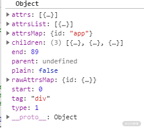
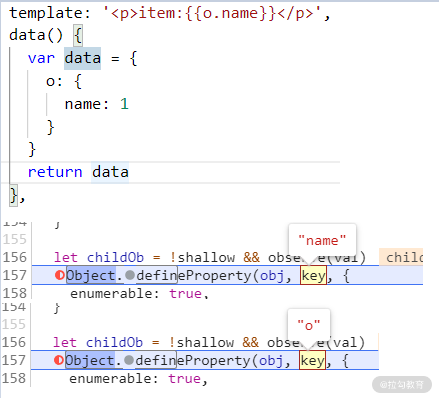

要点：组件、前端路由、组件间通信。
组件
不同框架、工具对组件的定义和实现各不相同，但可以用一句话来概括它们对组件的定义： 组件就是基于视图的模块 。
组件的核心任务就是将数据渲染到视图并监听用户在视图上的操作。这一课时，我们以主流的 Vue 2.6 和 React 16.13 的源码为例，讲解较为复杂的数据渲染到视图的实现过程。
一、视图
虽然 Vue 和 React 在编写组件视图的方式上有所不同，前者采用模板语言，更偏向于 HTML 语法，后者推荐使用语法糖 JSX，更偏向于 JavaScript 语法，但两者都是浏览器所无法直接识别的，所以都需要通过编译器转换成对应的可执行代码。下面来看看它们的实现。
Vue
Vue 的模板编译器可分为 3 步：解析、优化、生成代码。
1. 解析
解析过程包括 词法分析 和 语法分析 ，其中词法分析是将字符串转化成令牌。Vue 有 3 个词法分析器，分别是 parseText()、parseFilter() 和 parseHTML()，其中 parseHTML() 用来解析视图模板字符串，词法分析的方式也是通过 while 循环截取视图模板字符串来实现的，下面的代码是截取的部分源码。
1 | while (html) { |
编译器在调用 parseHTML() 函数时，还传入了一个回调函数 start()，让 parseHTML() 在进行词法分析时的同时通过调用 start() 函数将令牌传给编译器进行语法分析，最终生成 AST，如下所示。
1 | parseHTML(template, { |

生成的 AST 结构示例图
2. 优化
Vue 并没有直接使用生成的 AST，而是进行一个优化操作。优化操作的目的就是将那些不会发生变化的静态 AST 节点进行标记，避免每次更新视图的时候操作它们。
1 | function markStaticRoots (node: ASTNode, isInFor: boolean) { |
3. 生成代码
编译的最后一步就是将优化后的 AST 转化成可执行的代码。这个转化的过程就是遍历 AST，然后判断节点类型，按照元素、指令解析成对应可执行的 JS 代码。
Vue 中的编译根据不同平台有所区别，下面是浏览器端的编译部分代码。
1 | // 视图模板 |
React
React 组件视图则使用 JS 的语法糖 jsx 来编写（不用 jsx 也可以编写组件），这种语法糖其实就是混合了 HTML 和 JS 两种语言，浏览器也是无法直接识别的，所以用到了 babel 及其插件 babel-plugin-transform-react-jsx 对 jsx 进行预编译，编译步骤和之前提到的基本一致，这里就不再赘述了。
延伸 1：虚拟 DOM 是用来提升性能的吗？
虽然 Vue 和 React 有着种种差异，但在某些地方达成了共识，比如都使用了虚拟 DOM 技术。对于使用过 React 或 Vue 的同学对虚拟 DOM 应该不陌生，其实就是 JavaScript 用来模拟真实 DOM 的数据对象。
DOM 的作用有以下两个。
- 优化性能 。DOM 操作是比较耗时的，对于大量、频繁的 DOM 操作，如果先在 JavaScript 中模拟进行，然后再通过计算比对，找到真正需要更新的节点，这样就有可能减少不必要的 DOM 操作，从而提升渲染性能。但并不是所有的 DOM 操作都能通过虚拟 DOM 提升性能，比如单次删除某个节点，直接操作 DOM 肯定比虚拟 DOM 计算比对之后再删除要快。总体而言， 虚拟 DOM 提升了 DOM 操作的性能下限，降低了 DOM 操作的性能上限。 所以会看到一些对渲染性能要求比较高的场景，比如在线文档、表格编辑，还是会使用原生 DOM 操作。
- 跨平台 。由于虚拟 DOM 以 JavaScript 对象为基础，所以可根据不同的运行环境进行代码转换（比如浏览器、服务端、原生应用等），这使得它具有了跨平台的能力。
二、数据模型
虽然组件屏蔽了 DOM 操作，但提供了数据模型作为操作接口。下面来看看 Vue 和 React 组件的另一个要素“数据模型”。
Vue
Vue 组件内部提供了一个值为函数的 data 属性，调用这个函数时会返回一个对象。下面的代码分别在组件声明时将 data 属性定义为函数和对象，当定义为对象时会报错。
1 | // 正确 |
但我们在修改数据模型的时候，data 指代的却是一个对象。那为什么在声明的时候还要通过函数来返回对象呢？
按照官方的说法，是为了保证“每个实例可以维护一份对返回对象的独立复制”，具体实现就是调用 data() 函数，并将其 this 指向当前组件实例 vm，同时将当前实例作为参数传递给 data() 函数，然后将返回的数据对象存储到组件实例 vm._data 属性中。下面代码是截取的部分源码。
1 | function initData (vm: Component) { |
需要注意的是，有一种例外情况，那就是 Vue 实例中的 data 属性是一个对象，因为 Vue 实例是全局唯一的，所以不需要通过调用函数的方式来创建数据对象副本。
React
虽然通过调用函数的方式确实可以保证每个组件实例拥有自己的数据，但如果 data 改成对象就一定不可以吗？
答案当然是否定的。在 第 07 课时“关于 JavaScript 的数据类型，你知多少”中实现过一个深拷贝函数，理论上通过深拷贝函数来创建数据对象副本，也是完全可行的。
React 组件的数据模型 state，其值就是 对象类型 。但 React 并没有直接采用深拷贝的方式来实现，因为深拷贝操作性能开销太大。下面的一段代码是创建对象和深拷贝对象的时间开销对比，耗时相差一倍，对于结构更加复杂的对象，这个差异可能会变得更大。
1 | // 创建对象 |
React 组件是通过将 state 设置为不可变对象的方式来实现的，不可变对象指的就是当一个变量被创建后，它的值不可以被修改。这也就意味着当组件状态发生变化时，不修改 state 属性，而是重新创建新的 state 状态对象。
React 中的不可变对象通过 Structural Sharing（结构共享）的操作，大大减少了性能开销。这种操作的原理就是，如果对象中的一个属性发生变化，那么只深拷贝当前属性，然后将对象属性指向这个深拷贝的属性，其他节点仍然进行共享。
下面的示例代码，验证了 React 组件的状态对象 state 的不可变性。
1 | let o = {val: 0} |
创建两个值为对象的变量 o 和 b，在 Child 组件的构造函数中赋值给 state，Child 组件中有两个按钮，分别用来修改 state.o 属性和 state.b 属性。如果只点击“按钮o”，通过控制台输出结果可以观察到，state.o 进行了深拷贝之后发生了改变，所以不等于对象 o，而 state.b 没有改变，仍然等于对象 b。
三、渲染
当数据发生变化时，如何修改视图呢？Vue 和 React 采取了两种不同的策略。
Vue
Vue 采取的是响应式的视图更新方式，基于 Object.defineProperty() 函数，监听数据对象属性的变化，然后再更新到视图。下面深入分析它的实现细节。
Vue 在组件初始化的时候会将 data() 函数返回的数据对象传入 observe() 函数，在这个函数中会将数据对象作为参数来创建一个 Observer 实例，在这个实例的构造函数中将会通过 Object.defineProperty 为数据对象的每个属性设置监听。
1 | export class Observer { |
当监听到数据变化时，该进行什么操作呢？这里我们查看 defineReactive() 的源码可以看到，除了为数据对象设置值之外，还会调用一个 dep.notify() 函数。
1 | function reactiveSetter(newVal) { |
这里的 dep 是在建立监听的时候创建的 Dep 实例，它相当于一个事件代理，内部有一个 subs 队列属性，用来存储依赖它的 Watcher 实例。当调用 dep.notify() 函数时，会遍历内部的 Watcher 队列，分别调用它们的 update() 函数。
1 | export default class Dep { |
Watcher 实例会在挂载组件的时候被创建，主要功能是一方面将自身添加到 Dep 实例的 subs 数组属性中；另一方面在收到更新通知后更新视图。值得注意的是，这个更新操作是延迟执行的，每次有新的数据变更要放入队列时都会进行判断，如果已存在则跳过，等所有变更都添加到队列后再进行统一更新操作。这么做的好处是如果同一个 watcher 被多次触发，只会被推入到队列中一次，从而避免了同一时刻重复操作 DOM 导致性能损耗。
具体实现是通过调用 queueWatcher() 函数，将当前 Watcher 实例放入到一个队列中进行缓冲。queueWatcher() 函数的源码如下所示。
1 | export function queueWatcher (watcher: Watcher) { |
在上面的代码中，flushSchedulerQueue 函数负责遍历队列并调用 watcher.run() 函数进行视图更新相关操作，实现异步队列的关键在于 nextTick() 函数，在调用该函数时，会将回调函数 flushSchedulerQueue() 放入一个 callbacks 数组中，然后执行一个 timerFunc() 函数，该函数会根据不同的运行环境选择可行的延迟执行方式，比如在现代浏览器中会优先使用 Promise.resolve().then，而在老版本的浏览器中会使用 setTimeout。
1 | if (typeof Promise !== 'undefined' && isNative(Promise)) { |
虽然功能实现了，但 Object.defineProperty() 这个函数本身还存在一个缺陷，就是当属性值为对象类型的时候，无法监听对象内部的数据变化。像下面的代码，监听对象属性 obj 和数组属性 array 都会失败。
1 | (function() { |
为了解决这个问题，Vue 分别采取了两个措施。对于对象属性，遍历对象属性逐层进行监听，下面是组件初始化断点调试的截图，从图中可看出，在组件初始化的时候分别对对象 data 的 o 属性和对象 o 的 name 属性进行了监听。

同时监听了对象 data 的 o 属性和对象 data.o 的 name 属性
对于数组属性，修改了会引起数组变化的 7 个函数，包括：
- push()
- pop()
- shift()
- unshift()
- splice()
- sort()
- reverse()
具体实现包括两步，第一步是根据 Array.prototype 创建一个新的原型对象 arrayMethods，通过 Object.defineProperty() 函数对 arrayMethods 对象的上述 7 个函数进行劫持和修改，当调用这些方法时发送消息告知视图需要更新，下面是相关源码。
1 | const arrayProto = Array.prototype |
第二步就是当遇到值为数组类型的属性时，将它的原型指向 arrayMethods 对象。
1 | export class Observer { |
当然 Vue 3 中使用 Proxy 能更好地解决这个问题，Proxy 可以直接监听整个数据对象而不再需要分别监听每个属性，同时还提供了更多的 API 函数，只是在兼容性方面不如 Object.defineProperty() 函数。
React
React 组件中的视图更新，并不是像 Vue 中那样自动响应的，而是需要手动调用 setState() 函数来触发。
React 为了提升组件更新时的性能，不仅将状态更新包装成任务放入了异步队列，而且还使用了类似协程的方式来调度这些队列中的更新任务。任务的执行顺序会根据每个任务的优先级来进行调整，并且任务的执行过程中可能会被中断，但状态会被保存，直到合适的时候会再次读取状态并继续执行任务。整个实现过程相当复杂，由于篇幅所限，不对其原理展开分析了，有兴趣的同学可自行查阅相关资料学习。
对于组件的开发者而言，这种调度机制的具体表现就是：在组件内部调用 setState() 来修改状态时将异步更新视图，而在原生 DOM 事件或异步操作中（比如 setTimeout、setInterval、Promise）则是同步更新视图。
四、总结
这一课时我们讲解了主流视图库 Vue 和 React 的组件实现机制。
两种框架用了不同的方式来描述组件视图，Vue 采用风格偏向 HTML 的模板语言，React 则采用了风格偏向 JavaScript 的 JSX 语法糖，虽然两者风格迥异，但都必须通过编译器进行编译之后才能在浏览器端执行。
在组件的数据定义上，两者也有明显的区别。Vue 通过函数来创建并返回数据对象，React 组件的状态对象则具有不可变性。这两种方式都保证了不同组件实例拥有独立的数据（状态）对象。
在渲染机制上，Vue 通过监听数据对象属性实现响应式的数据绑定，通过建立异步更新队列来提升性能。React 则需要手动调用 setState() 函数才能触发更新，同时建立了异步任务队列来提升性能。通过类似协程的方式来调度这些任务。
最后布置一道思考题：你还知道哪些数据绑定的实现方式？
前端路由实现
当浏览器地址栏中的 URL 发生变化时，会请求对应的网络资源，而负责响应这个网络资源的服务就称为路由。在早期的 Web 开发中，路由都是交由服务端处理，但随着前端技术的快速发展，路由模块逐渐转移交给了前端进行控制，而路由转移到前端，正是前后端分离和单页应用架构 的 基石。这一课时我们来深入理解前端路由的技术细节。
一、前端路由实现基础
默认情况下，当地址栏的 URL 发生变化时，浏览器会向服务端发起新的请求。所以实现前端路由的重要基础就是在修改 URL 时，不引起浏览器向后端请求数据。根据浏览器提供的 API，有下面两种实现方案。
基于 hash 实现
前面提到当 URL 变化时浏览器会发送请求，但有一种特例，那就是 hash 值的变化不会触发浏览器发起请求。
hash 值是指 URL“#”号后面的内容，通过 location.hash 属性可以读写 hash 值，这个值可以让浏览器将页面滚动到 ID 与 hash 值相等的 DOM 元素位置，不会传给服务端。
要监听它的变化也比较简单，通过监听 window 对象的 hashchange 事件就可以感知到它的变化。
这种实现方式占用了 hash 值，导致默认的页面滚动行为失效，对于有滚动定位需求的情况需要自行手动获取元素的位置并调用 BOM 相关 API 进行滚动。
基于 history 实现
HTML 5 提出了一种更规范的前端路由实现方式，那就是通过 history 对象。
history 提供了两个函数来修改 URL，即 history.pushState() 和 history.replaceState()，这两个 API 可以在不进行刷新的情况下，来操作浏览器的历史 记录 。唯一不同的是，前者是新增一个历史记录，后者是直接替换当前的历史记录。
监听 URL 变化则可以通过监听 window 对象上的 popstate 事件来实现。但需要注意的是，history.pushState() 或 history.replaceState() 不会触发 popstate 事件，这时我们需要手动触发页面渲染。
虽然能通过这种方式实现前端路由功能，但并不能拦截浏览器默认的请求行为，当用户修改地址栏网址时还是会向服务端发起请求，所以还需要服务端进行设置，将所有 URL 请求转向前端页面，交给前端进行解析。
下面是 vue-router 官网的 Nginx 配置例子：表示对于匹配的路径，按照指定顺序依次检查对应路径文件是否存在，对应路径目录是否存在，如果没有找到任何文件 或目录 ，就返回 index.html。而 index.html 就会引入对应的 JavaScript 代码在浏览器端进行路由解析。
1 | location / { |
二、路由解析
阻止浏览器在 URL 变化时向后端发送请求之后，就需要对路由进行解析了。 vue-router和 react-router都同时依赖了一个第三方库 Path-to-RegExp进行路由解析，下面通过分析 path-to-regexp 1.8 版本的源码来理解路由是如何被解析的。
路由解析又分为两个操作：路由匹配和路由生成。
路由匹配
路由匹配就是当获取到请求路径后，如何找到对应的配置路径。在 path-to-regexp 源码中对应的是默认导出函数 pathToRegexp()，该函数接收 3 个参数：
- path，必传参数，值可以为自定义的请求路径，如 /user/:id，也可以是正则表达式，还可以是两者组成的数组；
- keys，可选参数， 值为 数组， 数组元素为 解析 正则表达式风格的字符串或冒号开头的占位符（下文简称为“特殊字符串”） 生成的令牌 ，比如字符串 /user/:id 对应的 keys 为 { name: ‘id’, delimiter: ‘/’, optional: false, repeat: false } ，这个参数的值最终会被保存到返回的正则表达式对象的 keys 属性中，可用于后面的路由生成；
- options，可选参数，执行过程中的配置信息，比如是否大小写敏感。
函数返回值是一个带有 keys 属性的正则表达式，keys 属性值类型和 keys 参数相同，也是一个包含特殊字符串描述信息的数组。
由于 path 参数可以是正则表达式、字符串、数组 3 种类型数据，所以在处理 path 参数的时候分别对应 3 个函数 regexpToRegexp()、stringToRegexp()、arrayToRegexp()。
1 | function pathToRegexp (path, keys, options) { |
arrayToRegexp() 函数会遍历 path 数组然后递归调用函数 pathToRegexp()，将所得的结果拼接成一个新的正则表达式并赋值 keys 属性。
1 | function arrayToRegexp (path, keys, options) { |
regexpToRegexp() 函数会找寻正则表达式中的负向后行断言，记录到正则表达式实例的 keys 属性中。
1 | function regexpToRegexp (path, keys) { |
一般情况下会调用 stringToRegexp() 函数来将字符串转换成正则表达式。函数 stringToRegexp() 只是调用了两个函数 tokensTo Regexp () 和 parse()。
1 | function stringToRegexp (path, keys, options) { |
看到 parse() 这个函数不知道是否会让你想起前面几讲中提到的编译器，该函数的主要作用和编译器中的词法分析比较像，它会将字符串转化为令牌数组。这些令牌分为两类，一类是非特殊字符串，不需要做任何处理，直接以字符串形式放入数组；另一类是特殊字符串，需要依赖一个正则表达式来进行处理。这个核心的正则表达式如下所示：
1 | var PATH_REGEXP = /(\\.)|([\/.])?(?:(?:\:(\w+)(?:\(((?:\\.|[^\\()])+)\))?|\(((?:\\.|[^\\()])+)\))([+*?])?|(\*))/g |
可以看到这个正则表达式中有多个通过圆括号形成的分组，通过调用 exec() 函数分别提取不同的信息，放入一个长度为 8 的数组中，对于不匹配的字符串则会返回 null。
1 | PATH_REGEXP.exec("/:test(\\d+)?") // ["/:test(\d+)?", undefined, "/", "test", "\d+", undefined, "?", undefined] |
词法分析过程和前面提到的一致，即利用 while 循环以及正则匹配，将匹配到的 子串 转换成令牌对象。例如，字符串 /user/:id，会被转换成包含一个非特殊字符串和特殊字符串的令牌数组：
1 | ["/user", |
在得到令牌数组之后，下一步是调用函数 tokensToRegExp() 将它转换成正则表达式。对于字符串令牌，直接转化成转义后的字符串，这个转义的过程也很简单，即在“/”“[”这类具有正则表达式功能的特殊字符前加上“\”。
1 | ... |
对于正则表达式令牌，首先放到前面提到的 keys 数组中，然后再对正则表达式令牌的内容进行标准化处理，拼接到最终的正则表达式字符串 route 中，再将 route 实例化为正则表达式对象，并附上 keys 属性。
1 | ... |
路由生成
路由生成是指通过配置的请求路径字符串和参数生成对应的请求路径，比如配置的请求路径字符串 /user/:id 和参数 {id: “lagou”} 可以生成 /user/lagou，在 path-to-regexp 源码中对应的是函数 compile()。
compile() 函数接收两个参数：str 和 options。str 为字符串，可能包含特殊字符串；options 同 pathToRegexp() 函数的 options 参数。
从参数可以看出，compile() 函数并不直接生成结果字符串，而是返回一个生成函数，将参数传入这个函数中可以生成结果字符串。
compile() 函数的内部只调用了两个函数 parse() 和 tokensToFunction()，parse() 函数前面已经分析过了，下面来分析函数 tokensToFunction()。
1 | function compile (str, options) { |
函数 tokensToFunction() 的核心代码在于返回的匿名函数，匿名函数内部会遍历令牌数组，对于字符串令牌，直接拼接到生成的路径中；而对于正则表达式令牌，则会通过令牌 token.name 属性来找到参数对象 obj 对应的值。如果这个值为字符串，则判断是否匹配 token 中的正则表达式，匹配之后进行 URI 编码并拼接到结果字符串 path 中；如果为数组，则循环执行字符串匹配过程。返回的匿名函数部分代码如下：
1 | for (var i = 0; i < tokens.length; i++) { |
三、总结
这一课时我们先介绍了前端路由的实现基础，包括基于 hash 实现和 history 实现。基于 hash 方式兼容性较好，但是占用了浏览器默认的定位行为，同时会加长 URL 字符串；基于 history 方式可以直接修改 URL 路径，较为美观。
然后分析了 vue-router 和 react-router 共同的依赖库 path-to-regexp 中的两个核心函数 pathToRegexp() 和 compile()。pathToRegexp() 会先将配置的请求路径字符串拆分成令牌数组，然后再转化成正则表达式对象，路由库可以通过正则表达式来进行路由匹配，从而将对应的组件渲染到页面；complie() 函数会将配置的请求路径字符串转化成一个匿名函数，这个函数可以传入参数并生成一个请求路径字符串。
组件通信之状态管理
前面讲了组件的 3 个要素：数据模型、渲染和视图。虽然通过组件化的方式能够有效地将 Web 页面进行解耦，但另一个问题也随之出现，组件之间如何进行通信。这一讲我们就来分析组件化 Web 应用中的组件通信问题。
一、全局状态
对于父子组件通信，框架都已给出可行的解决方案：父组件通过 prop(s) 属性向子组件传参，子组件通过自定义事件来向父组件发送消息。而非父子组件之间，如果通过层层传递，这个过程就会变得相当麻烦。最简单的直接解决方式就是设置一个供多个组件共享的全局变量，但如果直接使用全局变量会存在一些问题，比如：
- 可能多个组件会同时修改变量值，这个过程无法追踪，调试问题也会变得很麻烦；
- 当全局变量值发生变化时，如何通知引用它的每一个组件？
1.状态管理库的特点
针对这些问题，一些状态管理库出现了，我们重点分析用于 Vue 的 Vuex 和用于 React 的 Redux，所谓的“状态”，就是不同组件之间传递和引用的数据模型。状态管理库具有 3 个特点：可预测、中心化、可调式。
可预测
可预测性指的是，如果状态 A 经过操作 B 会生成状态 C，那么不论在任何时刻、任何平台（客户端、服务端、App 端），只要 A 和 B 不发生变化，就能得到同样的结果 C。比如下面代码中的函数就是不可预测的：
1 | function getTime() { |
getTime() 函数在不同时刻会得到不同的值，getDom() 函数只能在网页上运行，所以结果都是不可预测的。而下面的函数都是可预测的：
1 | function nextDay(time) { |
可预测性只是纯函数的优势之一，后面我们在讲函数式编程的时候再详细介绍纯函数相关的内容。
中心化
Vuex 和 Redux 都只会构建一棵中心化的状态树，所有的状态数据都会作为子属性挂载到这棵树上，非常有默契。
可调式
可调式指的是可以利用浏览器插件，对状态的变化和使用情况进行追踪和调试。Vuex 提供了 Vue.js devtools插件，Redux 也提供了 Redux DevTools。
2.状态管理库实现原理
了解状态管理库特性之后，我们再对写和读这两个核心操作的源码进行分析。
Vuex（3.5.1）中修改状态
下面是一段简单的示例代码，从代码中我们可以看到，通过执行 store.commit(‘increment’) 来调用 mutation 中的 increment() 函数，从而达到修改状态的操作。所以我们来分析 commit() 函数的实现原理。
1 | const store = new Vuex.Store({ |
commit 部分源码如下所示，从代码中可以看出，首先通过 mutations[type] 获取 store 初始化时 mutations 对象下的属性（以下简称为“mutations”），在示例代码中，type 的值为 increment。因为 Vuex 提供了模块机制，不同模块下可能出现相同名称的 mutations，所以保存为数组的形式。
然后调用 _withCommit() 函数，将当前变量 _committing 赋值为 true，执行完回调函数后再还原为之前的值。这个回调函数则会遍历执行 mutations。其中 payload 为调用 commit 时传入的参数，对应示例代码中的数值 1。
1 | Store.prototype.commit = function commit (_type, _payload, _options) { |
Vuex（3.5.1）中读取状态
Vuex 在进行初始化的时候会在内部创建一个 Vue 实例，并且赋值给 store._vm 属性，在这个实例中创建了数据模型 $$state，$$state 的初始值即为我们在初始化 store 时的 state 属性，对应示例代码中的对象 {count: 1}。这个 $$state 属性在 mutations 中以及通过 store.state 访问时都会用到。
1 | store._vm = new Vue({ |
然后对原型对象 Store.prototype 的属性 state 进行劫持，当读取 store.state 时将返回 _vm._data.$$state。这样当通过 mutations 修改它的时候，就能即时返回最新的值了。
1 | Object.defineProperties( Store.prototype, prototypeAccessors$1 ); |
Redux（4.0.5）中修改状态
下面是官方给出的一段简单的 Redux 示例代码，从中可以看到，通过 store.dispatch() 函数来触发状态更新，通过 store.getState() 函数来获取当前状态信息。
1 | function counter(state = 0, action) { |
dispatch() 函数是用来分发 action 的，可以把它理解成用于触发数据更新的方法。它的实现非常简单，部分源码如下：
1 | function dispatch(action) { |
dispatch() 函数会以当前的状态 currentState 以及我们定义的动作 action 作为参数来调用 currentReducer() 函数，该函数对应示例代码中的 counter() 函数。
Redux（4.0.5）中读取状态
getState() 函数的代码实现比较简单，首先判断是否为分发状态，如果是则抛出错误，否则直接返回 currentState，而 currentState 的值在 dispatch() 函数执行时就已经被更新了。
1 | function getState() { |
二、其他组件通信方式
选用状态管理库并不是解决跨组件传递数据的唯一方式，下面再介绍 2 种方式也能提供跨组件通信，以 Vue 为例进行讲解。
1.全局上下文
在 Vue 中，提供了一组 API 用来解决祖先组件与子孙组件的通信问题，那就是 provide 和 inject。provide 可以在祖先组件中指定我们想要提供给子孙组件的数据或方法，而在任何子孙组件中，我们都可以使用 inject 来接收 provide 提供的数据或方法。
下面的示例代码中，根组件通过 provide() 函数将数据模型的属性 o 暴露给子孙组件，子孙组件则通过 inject 属性来声明对属性 o 的引用。这样相当于组件之间共享了属性 o，因为只要任何一处修改了 o.count 属性，其他各处也会随之发生变化。
1 | <div id="app"> |
2.事件监听
事件监听则是利用组件库本身的事件机制，设置一个全局事件代理，用来负责向各个组件传递数据。
下面是一个简单的示例。创建一个 Vue 实例 eventBus，然后通过 Object.defineProperty 将其注入 Vue 组件中，这样在组件中就可以通过 this.$bus 来访问这个 Vue 实例了。当任何一个组件按钮被点击时，通过事件冒泡 this.$bus.$emit 来传入新的状态，其他组件则通过事件监听 this.$bus.$on 来获取最新的状态。
1 | <div id="app"> |
三、总结
本讲介绍了 3 种不同的跨组件通信方式。由于通信双方不属于父子组件，也就是没有直接的依赖/引用关系，所以需要借助“第三方”来进行传递数据，这些“第三方”既包括视图库（Vue 和 React）本身提供的事件机制或全局上下文，也包括面向其进行开发的状态管理库。
对于最常用的全局状态管理库 Vuex 和 Redux，通过深入分析其源码，理解了其实现原理。Vuex 内部会创建一个 Vue 实例，并使用这个实例的数据模型来做状态更新；而 Redux 则采用了无副作用的纯函数来生成不可变数据。
组件库默认提供了全局上下文的方式来解决跨组件通信问题，非常轻量，适合在小型 Web 应用中使用，缺点是追踪调试状态变化比较困难。事件监听的方式也可以不依赖额外的第三方库来实现，但在监听到事件改变时需要在组件内部手动触发视图更新。
Tips: Please indicate the source and original author when reprinting or quoting this article.